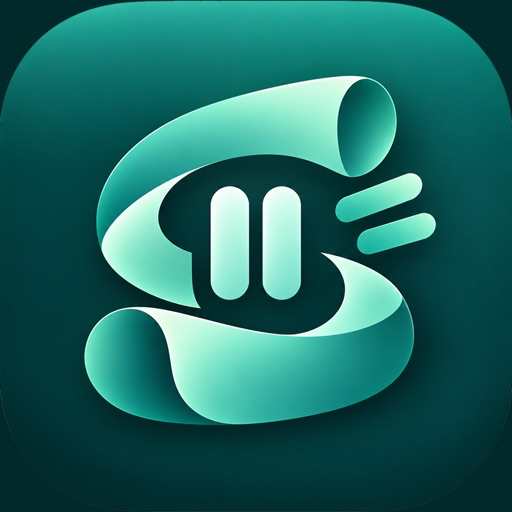
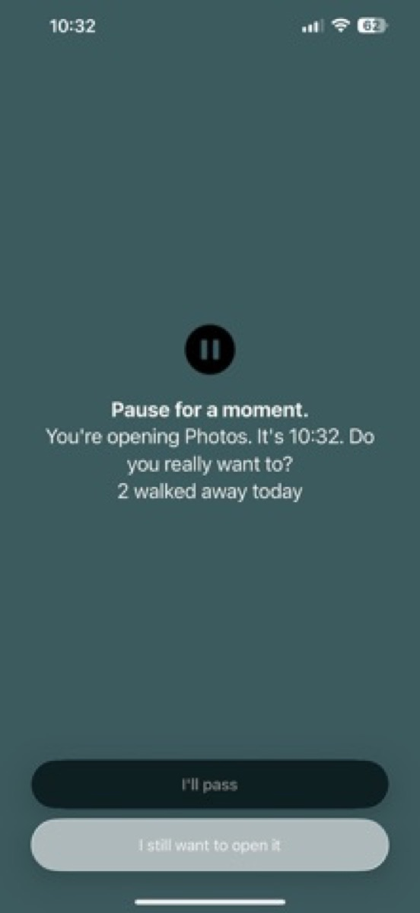
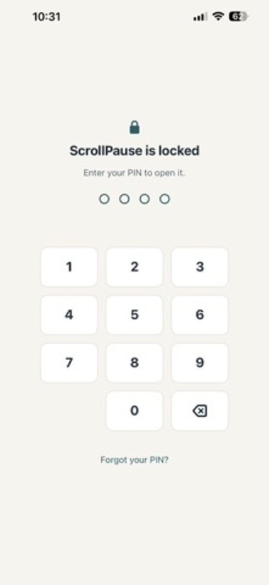
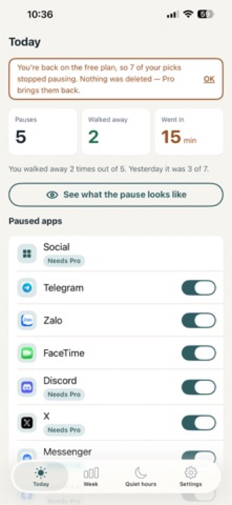
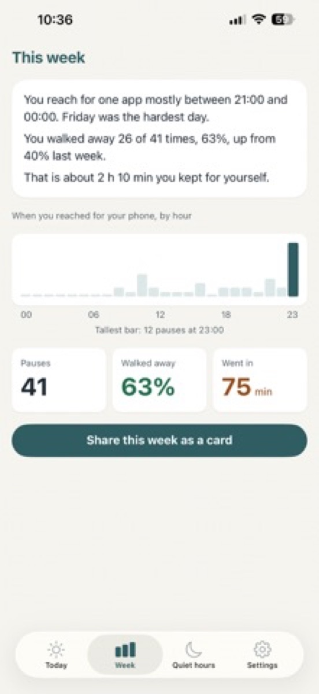
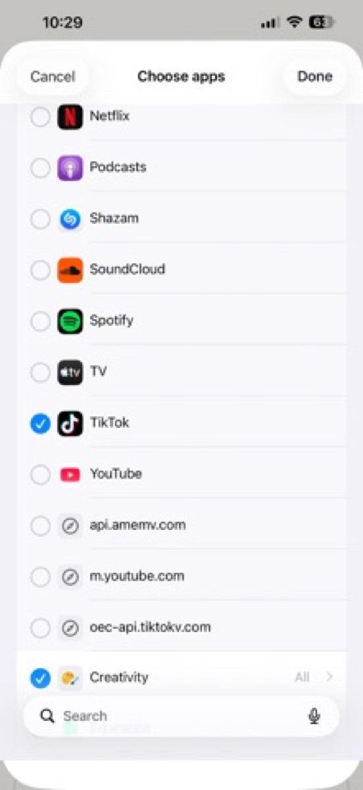

Stop the Scroll
One moment of friction between you and the app you opened without meaning to.





ScrollPause puts one moment of friction between you and the app you open without meaning to.
Pick the apps that pull you in. The next time you open one, a pause screen appears first. It tells you which app you are opening and what time it is, and asks whether you really meant to. Tap "I'll pass" and the app closes. Tap through twice and you get five minutes, then the pause comes back.
That is the whole idea. No streaks, no lectures, no shame.
Every screen-time tool has the same weak point: the moment you decide to switch it off. Usually that moment arrives late at night, and it wins.
Set a four-digit PIN and ScrollPause asks for it before it opens. Your quiet hours, your paused apps, your settings — none of it can be changed by whoever is holding the phone. Including you, at 1am.
What the PIN honestly does and does not do: it guards ScrollPause. It cannot stop anyone from deleting the app, or from switching Screen Time off in iPhone Settings — no app on iOS can do that, and any app that says otherwise is selling you something.
Pro is a yearly plan or a one-time lifetime purchase. There is no free trial that renews behind your back.
No account. No sign-in. No server. No ads. No analytics. No third-party code of any kind.
The apps you choose are handled by Apple's Screen Time system, which hands ScrollPause an anonymous token for each one — a value the app cannot read or turn back into a name. Your counts live in a database on your iPhone. Your PIN is stored as a one-way hash in the iOS Keychain and never leaves the device. Delete the app and all of it goes with it.
Made by PrimeTruth Team. Questions: zenDesign219@gmail.com
iPhone · iOS 17.0+